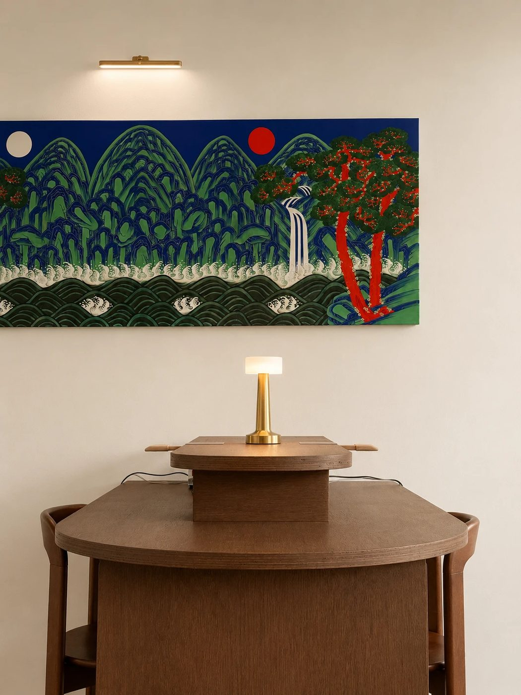
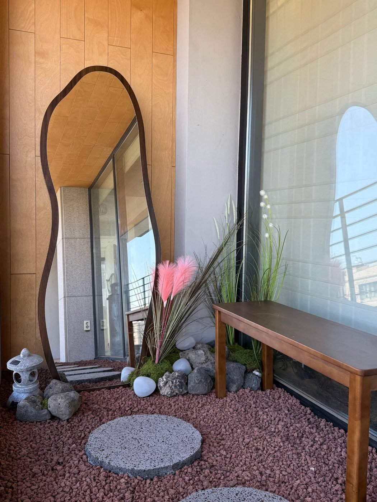
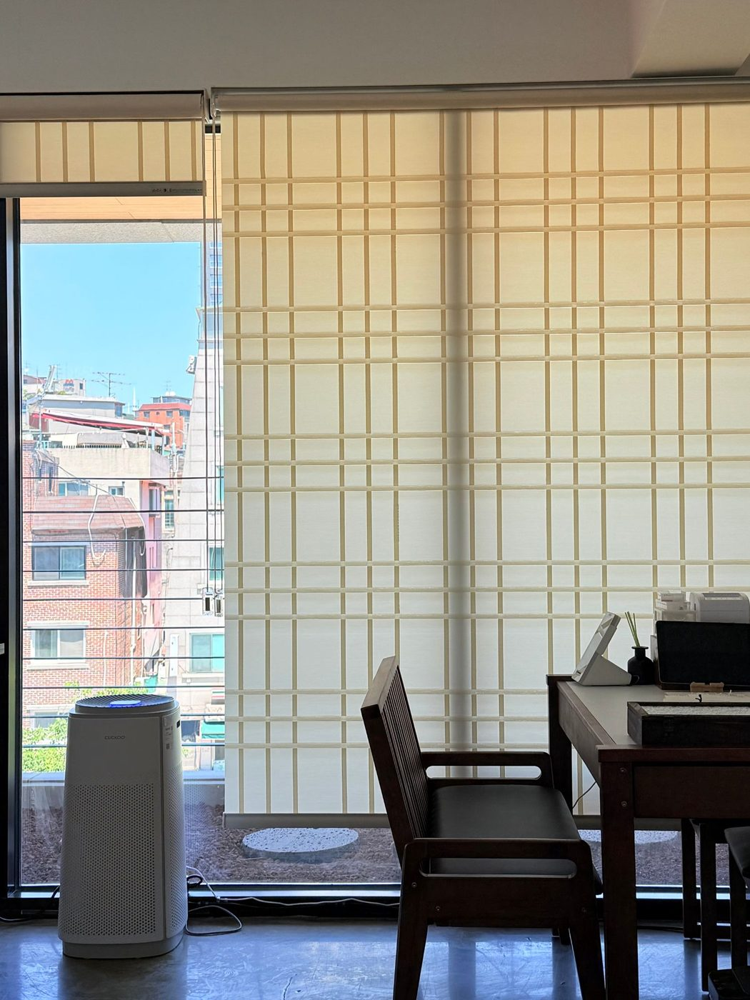
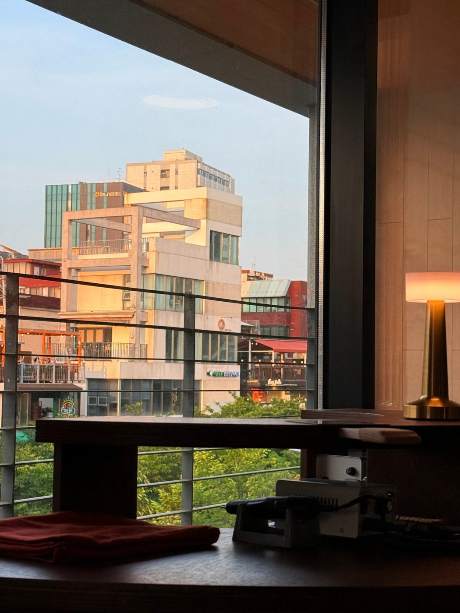
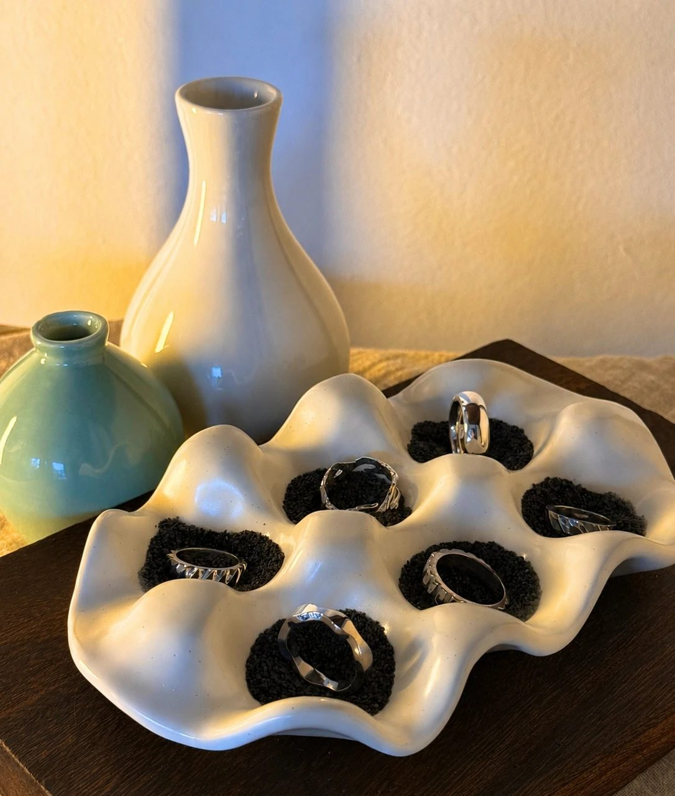
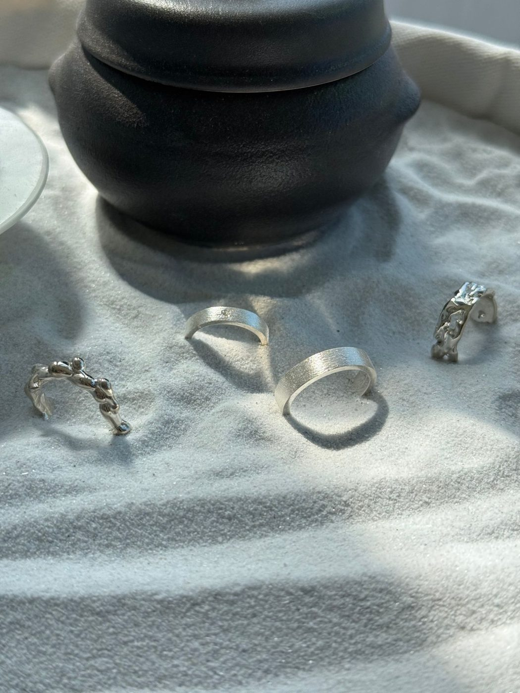
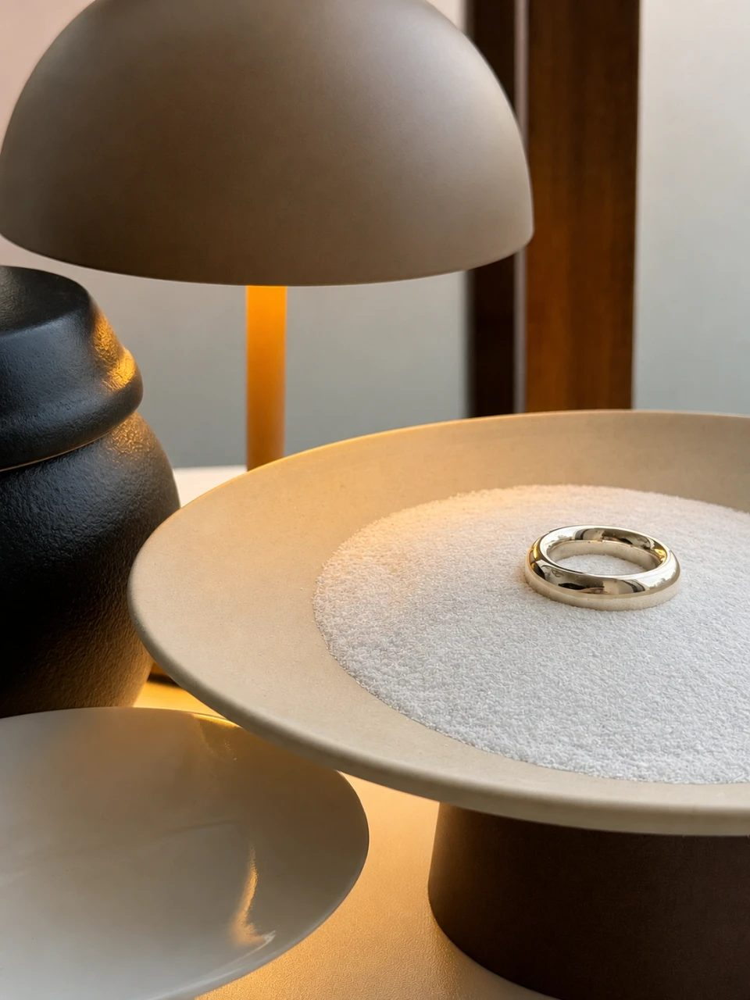
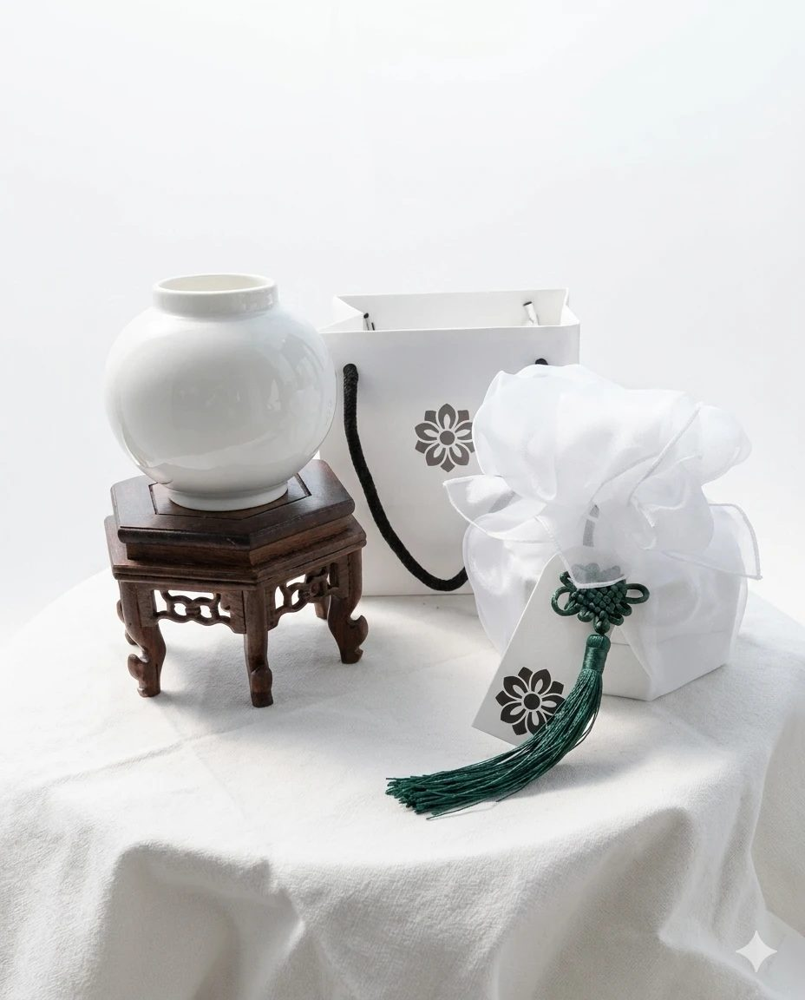

About ONMYEONG
온명 반지공방
Studio
공방 둘러보기
온명의 공간들입니다. 첫 자리는 베란다에 마련해 둔 포토존이라, 찾아오시면 반지를 끼고 사진을 남기실 수 있습니다.







Package
받으실 때의 모습
반지는 흰 보자기에 싸고 매듭을 묶어 보내 드립니다. 그대로 선물로 건네셔도 됩니다.
- 보자기 포장과 태슬 카드 — 따로 값을 받지 않습니다
- 주문하신 날짜를 적은 엽서와 포토카드를 함께 넣어 드립니다
- 은을 닦는 폴리싱천도 같이 들어갑니다 — 관리법은 아래에 적어 두었습니다
- 선물용으로 보내실 주소가 따로 있으면 주문 상담에서 말씀해 주세요
Visit
위치와 운영 시간
방문 수령
공방으로 직접 오시면 끼워 보고 호수를 바로 맞춰 드립니다. 택배비도 들지 않습니다.
방문은 예약제입니다. 주문 상담에서 시간을 잡아 주세요.
Care
반지 관리법
Size A/S
사이즈 조정
어떻게 진행되나요
- 네이버 플레이스로 “사이즈 조정”이라고 남겨 주세요. 이 길이 가장 빠릅니다.
- 공방 주소로 반지를 보내 주시거나, 직접 가져오시면 됩니다.
- 조정 후 다시 보내 드립니다. 보통 3~5일 걸립니다.
이런 경우는 먼저 상담해 주세요
Ring Size
내 호수 찾는 법
호수 ↔ 둘레 표
종이띠로 잰 둘레를 찾아 같은 줄의 호수를 고르시면 됩니다.